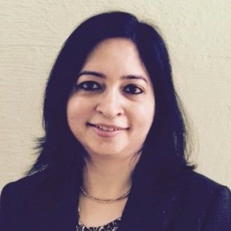

Monika Chopra

SUMMARY
Expertise in teaching the following subjects in MBA & Executive MBA programs : -
- Security Analysis and Portfolio Management
- Mergers Acquisitions & Corporate Restructuring
- Behavioral Finance
- Fixed Income Securities
- Corporate Finance
EDUCATION
Guru Nanak Dev University, Amritsar
Master of Business Administration (M.B.A.) 2001, Finance, GeneralGuru Gobind Singh Indraprastha University
Doctor of Philosophy (PhD) 2009, Finance, GeneralCFA Institute
CFA Charterholder
Grade: Cleared all three levels in the first attempt
Activities and societies:
- Member CFA Institute USA
- Member Indian Association of Investment Professionals
CFA Institute
Certificate in ESG Investing
Jul 2022 - Jun 2023
Skills: Environmental, Social, and Governance (ESG)
WORK EXPERIENCE
Lecturer
Punjab College of Technical Education
Jul 2002 - Apr 2003 • 10 mos
Ludhiana, India
Lecturer
International Management Centre
Sep 2003 - Sep 2004 • 1 yr 1 mo
New Delhi, IndiaSenior Lecturer
Delhi Productivity Council Institute of Management
Sep 2004 - May 2008 • 3 yrs 9 mos
New Delhi, IndiaICFAI Business School
6 yrs 5 mos
Adjunct Professor
May 2012 - Sep 2014 • 2 yrs 5 mos
Gurgaon, IndiaFaculty
May 2008 - May 2012 • 4 yrs 1 mo
Gurgaon, India
Visiting Professor
Guru Gobind Singh Indraprastha University
May 2013 - Sep 2014 • 1 yr 5 mos
New Delhi, India
Assistant Professor
Lal Bahadur Shastri Institute of Management
Sep 2014 - Aug 2017 • 3 yrs
New Delhi Area, India
Teaching Courses: Financial Analysis, Fixed Income Securities, Investment Analysis & Portfolio Management, Corporate Finance & International Financial Management
CFA Institute India
8 yrs 8 mos
Director, Board of Directors (Part-time)
Oct 2023 - Present • 1 yr 6 mos
Volunteer, IAIP
Aug 2016 - Present • 8 yrs 8 mos
New Delhi Area, India
Part of core committee responsible for conducting the CFA Research Challenge in IndiaInternational Management Institute - IMI
7 yrs 7 mos
Finance and Accounting Area Chair (Full-time)
Sep 2023 - Present • 1 yr 7 mos
Delhi, India • On-site
Associate Professor (Full-time)
Jan 2022 - Present • 3 yrs 3 mos
New Delhi Area, India
Program Chairperson PGDM B&FS Program (Full-time)
Jun 2019 - Jun 2023 • 4 yrs 1 mo
New Delhi, Delhi, India • On-site
Assistant Professor of Finance
Sep 2017 - Jan 2022 • 4 yrs 5 mos
New Delhi Area, India
SKILLS
Environmental, Social and Governance : ⭐️⭐️⭐️⭐️⭐️
Faculty Development : ⭐️⭐️⭐️⭐️
Academic Administration : ⭐️⭐️⭐️⭐️⭐️
Licenses & Certifications
CFA Institute Charterholder
NYU Stern Advanced Valuation Certification
Chartered Financial Analyst
OTHER